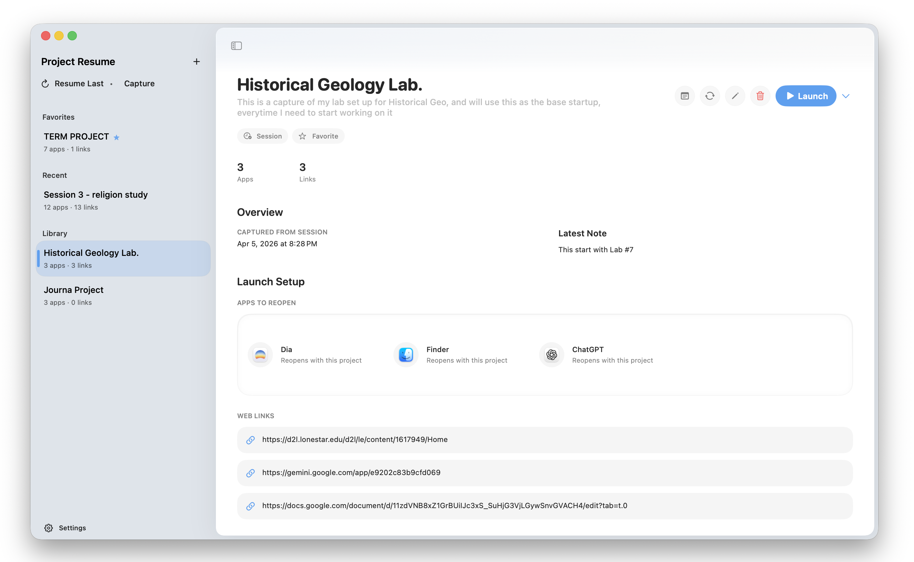
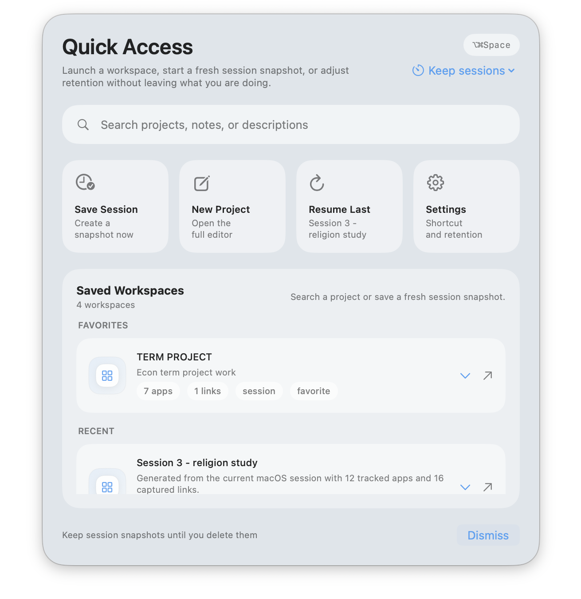
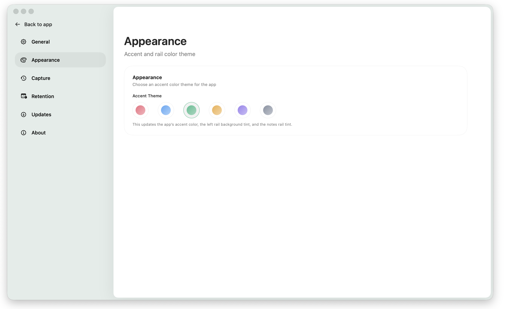

Capture a session that already exists.
Turn active work into a reusable launch state instead of rebuilding it tomorrow.
 Project Resume
Project Resume
Project Resume is for people who repeatedly return to the same work and lose time rebuilding context. It saves the real shape of a project session: apps, links, commands, notes, launch context, and a fast quick-access surface you can trigger anytime from anywhere on your Mac.

Most tools bring you back to content. Project Resume brings you back to working momentum by reopening the environment around the work.
Turn active work into a reusable launch state instead of rebuilding it tomorrow.
Open a centered command space at any time to resume the last project, save a session, or jump straight into a workspace.
Apps, web links, commands, folder, and the note that tells you what matters next.
Choose from multiple appearance themes so the workspace fits your taste instead of forcing one fixed visual style.
Less tab hunting, less remembering, more immediate momentum.
Your project data stays on-device. Project Resume is built around local storage, lightweight references, and a privacy-first workflow.
It captures a real session instead of asking the user to rebuild it manually from scratch.
It works across multiple surfaces: main app, menu bar, widgets, and a Quick Access panel triggered from anywhere.
It stays intentionally local-first and lightweight, which makes the value immediate instead of enterprise-heavy.
Quick Access acts like a lightweight command space for your work. Trigger it from anywhere on macOS, search your saved projects instantly, save a new session, resume the last workspace, or jump into settings without breaking focus.

Start clean or save the session that is already open.
Keep the folder, apps, links, commands, and note in one place.
Return later and reopen your working state without reconstructing it.

Project Resume supports multiple appearance themes so the workspace can feel personal without losing its minimal design language. The visual system stays quiet, clean, and native while still giving users choice.
This is not a concept page. The current build already works across the core workflow and is being prepared for public Mac distribution.
The product is already functional, polished, and demo-ready end to end. Public Mac availability is the final packaging step.